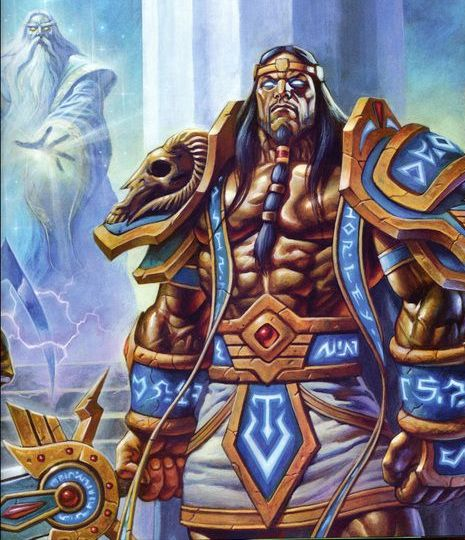

Пылающий Легион (также известный как Легион, Великая Пылающая Тьма, или Легион Нижних Миров) – бесчисленная армия демонов, инферналов и падших рас, целью которой является уничтожение всего во Вселенной и воцарение хаоса. Они трижды вторгались на территорию Азерота, и каждой раз отбить атаку удавалось все большей ценой. Большая часть истории Азерота (в том числе Первая, Вторая и Третья войны) случились под влиянием Пылающего Легиона.
Изображения некоторых видов демонов Легиона
Легион – заклятый враг Азерота; именно он развратил орков и направил их через Темный Портал, создал Короля-Лича и является источником большинства разрушений. Следует отметить, что Азерот – единственный известный мир, не павший перед мощью Легиона.
Цель Пылающего Легиона - обратить все работы титанов и вернуть Вселенную в ее первозданное хаотическое состояние. На практике демоны Легиона уничтожают всех живых существ в мирах, которые атакуют, и проклинают земли, чтобы поглотить всю их энергию.
Пылающий Легион уничтожил множество миров в своей сумасшедшей ненависти и жажде страданий. Он несет ответственность за вымирание тысяч рас Вселенной.
Легионом правит падший титан Саргерас – создатель и повелитель Пылающего Легиона, поступки которого и последствия этих поступков делают его главным врагом всего живого в Азероте. Когда-то Саргерас был доблестным титаном Пантеона, сражавшимся против демонов, пока не узнал о существовании Повелителей Бездны и их желании поглотить вселенную. Саргерас стал свидетелем того, как Древние Боги искажают титана, спящего в глубинах планеты. Осознав, насколько велика угроза, он решил, что для спасения вселенной от поглощения Бездной всё живое следует уничтожить. Разногласия с собратьями заставили Саргераса покинуть Пантеон и созвать могущественную армию демонов, которая займется уничтожением миров в Великой запредельной тьме.

Титан Саргерас до и после своего падения